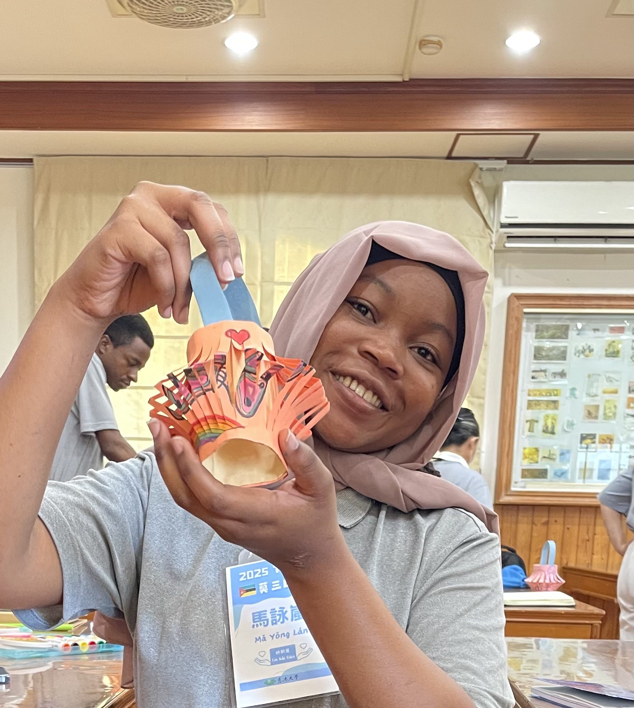

This was a foundation year of academics, discipline, and self-discovery. It marked the beginning of a stronger commitment to learning and personal direction, and it helped me see my goals more clearly.
International student journey
Yola Maganha From Mozambique 🇲🇿 to Taiwan 🇹🇼
Learning. Serving. Creating. Growing.

About Me
Growing across cultures, learning with purpose.
I am Yola Lizzy Maganha, a Mozambican international student in Taiwan, building my academic and professional journey with curiosity, perseverance, and heart. I am currently studying at Tzu Chi University, where I am learning not only in the classroom but also through daily experiences with language, service, community, and cross-cultural collaboration.
My story is shaped by resilience and a strong desire to keep growing. Technology and programming became meaningful areas of interest to me because they connect creativity, problem-solving, and future possibilities. Through every challenge, I have learned to make the most of the opportunities around me and keep moving forward with purpose.
- International education
- Personal growth
- Cross-cultural experiences
- Volunteering and service
- Technology and digital skills
- Learning Mandarin
- Project planning
- Community involvement
- Building a meaningful future
My Journey
Small steps, meaningful growth.
I began exploring the paths that would shape my future, including technology, communication, service, and international opportunities.
This was the start of a new chapter—studying abroad, adapting to a new environment, and discovering the value of community, culture, and perseverance in my own life.
Life in Taiwan has become a space for growth—through study, service, community activities, project work, and learning how to navigate a new culture with confidence.
This period is focused on building practical skills, connecting with others, and becoming more prepared to serve communities in meaningful ways through my work, learning, and values.
I hope to keep learning, growing, and creating impact in Mozambique and beyond—bringing together values of service, leadership, empathy, and innovation in a meaningful way.
Education
Building a future with purpose and knowledge.
🇹🇼 Taiwan
Tzu Chi University
Bachelor’s Degree in International Service Industry Management
2025–Present
Previous education in Mozambique
My earlier academic experience in Mozambique shaped my foundation in discipline, language, and ambition. It laid the ground for my continued academic journey in Taiwan and my growing interest in international service and professional development.
Language Certifications
Continuing to grow in communication and connection.
Certified
TOEIC
CEFR Level: C1
Advanced English proficiency with confidence in communication and academic expression.
Learning
TOCFL
Level: B1
Intermediate Mandarin proficiency, supported by daily learning, cross-cultural communication, and community experience.
Experience
Learning through service and everyday effort.
Volunteer & Community Experience
- Volunteering with Tzu Chi and Jing Si activities
- Environmental awareness and care
- Community service and outreach
- Cleaning and shared-space service activities
- Disaster recovery and service-oriented action
- Participation in international student activities
Each experience helped me learn that service is not only about helping others—it is also about humility, empathy, and understanding what can be gained from caring for a community.
International Student Experience
- Adapting to life in Taiwan
- Cross-cultural communication
- Mandarin learning and daily practice
- Working with students from many countries
- Building teamwork in a new environment
Moving from Mozambique to Taiwan has strengthened my ability to adapt, connect, and grow across cultures while staying grounded in my identity and values.
Technology & Learning
I became increasingly interested in technology and programming because I enjoy the way it combines creativity, logic, and problem- solving. I keep building my skills through consistent practice, curiosity, and a willingness to keep learning.
This journey reflects perseverance in a practical way: I do not wait for perfect conditions, but I grow through effort, curiosity, and a steady desire to improve.
Projects
Ideas shaped by care, culture, and community.
🌱 Eco-Minds
Eco-Minds
A project related to waste management in Mozambique and sustainable development, connecting environmental awareness with community responsibility and the Sustainable Development Goals.
🎙️ 異客日記
異客日記 — Stranger’s Diary
An international student media and storytelling project focused on cultural exchange, personal experiences, and the stories of students navigating new worlds.
💻 Personal Website
Personal Website
This portfolio is itself a project demonstrating Yola’s interest in technology, creativity, and digital communication.
Skills
Strengths shaped by learning and service.
Languages
Technology
Professional Skills
Volunteering & Service
Service that teaches as much as it gives.
“Service is not only about what we give to others, but also about what we learn from serving.”
My Values
Living with purpose and heart.
Perseverance
Service
Learning
Curiosity
Responsibility
Cross-cultural understanding
Growth
Jing Si-inspired reflection space
Authentic Jing Si Aphorism can be added later.Personal Interests
Life beyond the classroom.
🎨 Fashion sketching and drawing
📚 Reading crime novels
🏋️ Fitness and weight training
🌏 Exploring different cultures
🈶 Learning Mandarin
💻 Technology and programming
Where I’m Going
Building a meaningful future with steady steps.
I want to continue developing professionally, gaining practical experience, and contributing to my community in Mozambique. I hope to use the knowledge gained through international study and life abroad to create meaningful impact and grow in ways that serve not only myself but also the people around me.
My future is guided by hope, realism, and responsibility. I am building a path that combines skill, service, and growth—one step at a time.
Contact